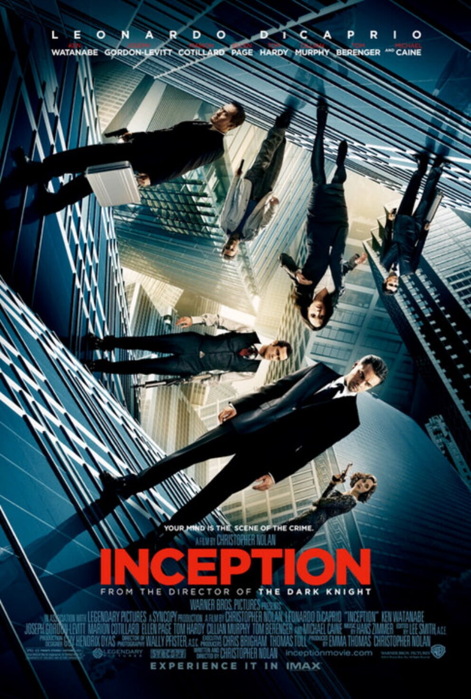
Dom Cobb (Leonardo DiCaprio) çok yetenekli bir hırsızdır. Uzmanlık alanı, zihnin en savunmasız olduğu rüya görme anında, bilinçaltının derinliklerindeki değerli sırları çekip çıkarmak ve onları çalmaktır...Cobb'un bu ender mahareti, onu kurumsal casusluğun tehlikeli yeni dünyasında aranan bir oyuncu yapmıştır. Ancak, aynı zamanda bu durum onu uluslararası bir kaçak yapmış ve sevdiği herşeye malolmuştur...Cobb'a içinde bulunduğu durumdan kurtulmasını sağlayacak bir fırsat sunulur. Ona hayatını geri verebilecek son bir iş; tabi eğer imkansız "başlangıç"ı tamamlayabilirse...Mükemmel soygun yerine, Cobb ve takımındaki profesyoneller bu sefer tam tersini yapmak zorundadır; görevleri bir fikri çalmak değil onu yerleştirmektir. Eğer başarırlarsa, mükemmel suç bu olacaktır.Ama ne dikkatle yapılan planlamalar, ne de uzmanlıkları, onları, her hareketlerini önceden tahmin ettiği anlaşılan tehlikeli düşmanlarına karşı hazırlıklı kılabilir. Bu, gelişini sadece Cobb'ın görebildiği bir düşmandır...
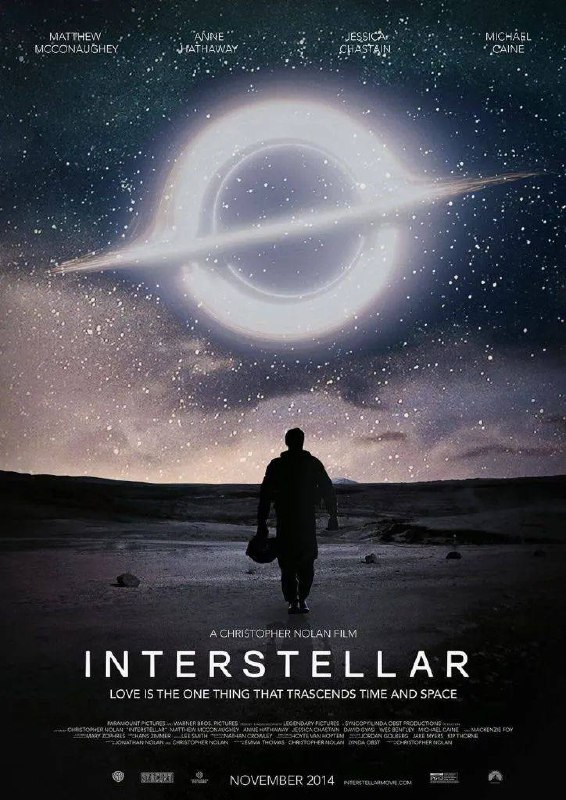
Dünya üzerindeki yaşamımız sona ererken, bir grup araştırmacı insanlık tarihinin en önemli görevini üstlenirler; Bulunduğumuz galaksinin ötesine yolculuk ederek insanlığın, yıldızların ötesinde yaşamını sürdürmesinin mümkün olup olmayacağını keşfe çıkarlar. Teknik bilgisi ve çok becerikli Cooper, mısır tarlalarında çiftçilik yaparak geçinmektedir; hayattaki tek amacı iki çocuğuna güvenli bir hayat sunmaktır. Onlarla yaşayan dede Donald çocuklara göz kulak olurken, henüz 10 yaşındaki kızı Murph şaşırtıcı bir zekaya sahiptir. Geçmişte bıraktığı bilim insanı kariyerini özleyen Cooper'un karşısına bir gün beklenmedik bir teklif çıkar ve ailesinin, dahası insanlığın güvenliği için zorlu bir karar alması gerekir... Film, Kip S. Thorne'nun evrende '" solucan deliklerinin " gerçekten var olduğu ve bu sayede zamanda yolculuğun mümkün olabileceği teorisinden ilham alınarak yaratılmıştır
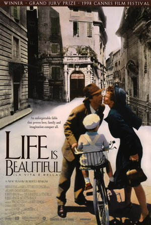
Hikaye, Yahudi kökenli bir İtalyan adam olan Guido (Roberto Benigni) ile onun genç oğlu Giosuè (Giorgio Cantarini) arasındaki ilişkiye odaklanır. Film, Mussolini yönetimindeki faşist İtalya'da başlar ve Nazilerin iktidara gelmesiyle birlikte İtalya'da da Yahudilere yönelik zulüm artar. Guido ve Giosuè, ailelerinden ayrı düşerler ve toplama kamplarına gönderilmek üzere trenle gönderilmek üzereyken, Guido oğluna savaşın bir oyun olduğunu ve kampta geçirecekleri süreci bir yarışma gibi düşünmeleri gerektiğini söyler. Bu, baba ve oğul arasındaki bağı güçlendirir ve Giosuè'yi umutla dolu tutar.
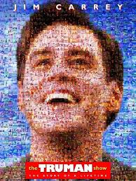
Dünyanın en güzel adalarından birinde yaşayan halk, imrenilecek derecede ütopik bir hayat sürmektedir. Bu adada yaşayan insanlar her güne mutlu uyanıp herhangi bir sorunla karşılaşmadan günü sonlandırıyorlardır. Ana karakterimiz Truman da bu şanslı insanlardan biridir. Güzel bir eşe ve mutlu bir hayata sahip olan Truman, öldüğünü zannettiği babasını bir gün caddede gördüğü ana kadar hayatı olduğu gibi yaşar. Babasını gördüğüne emindir ancak adam bir anda ortalıktan kaybolmuştur. İlerleyen günlerde çeşitli gizemli anlar yaşayan Truman bir şeylerin yolunda gitmediğini fark edecek, sahip olduğu hayatın gerçek olup olmadığını anlamaya çalışacaktır. Televizyon sektörü üzerine yapılan en esaslı eleştirilerden biri olan Truman Show sinema tarihinin en yaratıcı senaryolarından birine sahip. Aynı zamanda başrolündeki Jim Carrey'nin olağanüstü performansını da es geçmemek gerekiyor.
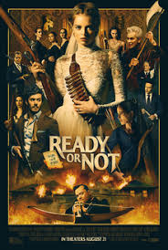
Ready or Not Saklambaç filmi Zengin bir adam ile evlenen genç bir kadının yaşadıklarını konu ediyor. Genç bir kadın, yeni evlendiği adamın eksantrik ailesi tarafından bir akşam yemeğine davet edilir. Birbirlerini daha iyi tanımalarını sağlayacak bu yemek davetini memnuniyetle kabul eden kadın, başına geleceklerden bihaber yemeğe katılır. Genç kadının sıradan bir akşam yemeği olarak düşündüğü bu davet, insanların hayatta kalmak için mücadele ettiği korkunç bir savaşa dönüşür...
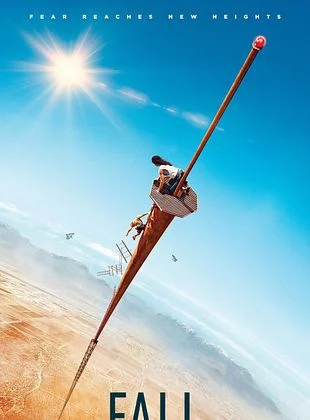
Birbirleriyle iyi arkadaş olan Becky ve Hunter kendilerini 600 metrelik bir radyo kulesinin tepesinde bulurlar.
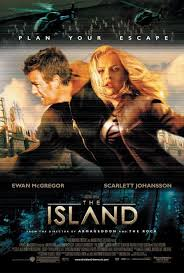
Başrolleri olan Lincoln Six Eco ve Jordan Two-Delta ütopik ve dışa kapalı 1 tesiste yaşamaktadırlar.. onlar da Ada ya gitme hayalindeler.. söylentiye göre bu Ada yeryüzün de tek kirletilmemiş bölgedir.. ve bu Adaya bir kaçış düzenlerler .. Amaçları Ada hakkındaki gerçekleri ortaya çıkarmak ve aksiyon dolu anlar başlar.
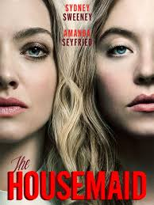
Hapisten yeni çıkan Millie, taze bir başlangıç umuduyla Nina ve Andrew Winchester’ın evinde hizmetçi olarak çalışmaya başlar. Konaklama ve yemeğin dâhil olduğu bu iş, 27 yaşındaki genç kadın için hayatını toparlamak adına büyük bir fırsat gibi görünür. Ancak evin huzursuz atmosferi kısa sürede kendini hissettirir. Şımarık kızları Cecilia’nın kaprisleri ve Nina’nın mesafeli tavırları Millie’yi giderek köşeye sıkıştırırken, yalnızca Andrew’un nazik davranışları dikkat çeker. Yeni hayatına tutunmaya çalışan Millie, içinde bulunduğu bu soğuk ve gizemli ortamda hayatta kalmaya çalışırken, Winchester ailesinin onu karanlık ve tehlikeli bir oyunun parçası hâline getirdiğini henüz fark etmemektedir.
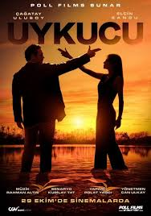
Uykucu, gizli bir örgütün ölümcül oyununda kesişen iki yaralı ruhun hikayesini konu alıyor. Ferman, “Masa” adlı gizli örgüt adına eski ajanları ortadan kaldıran soğukkanlı bir tetikçidir. Bir görev sırasında hedefi olan Saye’yle karşılaşır ve beklenmedik şekilde ona aşık olur. Saye’yi öldürmek yerine örgüte kazandırmayı seçer. Bu karar, ikisinin de hayatında geri dönüşü olmayan bir yolun başlangıcı olur.
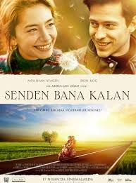
Çocukluğunda annesiz ve babasız kalan Özgür, büyükbabasının mirası sayesinde zorluk görmeden, biraz da şımartılarak büyümüştür. Büyükbabasından kalacak olan miras sayesinde rahat ve sorumsuz bir hayat sürmeyi planlarken 18 yaşına bastığı gün işlerin hiç de umduğu gibi gitmeyeceğini öğrenir. Özgür mirası alabilmek için vasiyetnamede yazan bir şartı yerine getirmek zorundadır. Buna göre İstanbul'dan Çanakkale'nin Adatepe köyüne taşınacak ve burada bir yıl geçirecektir. Özgür bu şartı yerine getirmezse mirasın yalnızca ufak bir kısmını alabilecek, geri kalan kısmı ise hayır kurumlarına bağışlanacaktır. Mirası hak ettiğini düşünen Özgür, Adatepe'ye gider ve kendini bekleyen yeni hayata böylece atılmış olur. Adatepe'de onu büyük sürprizler beklemektedir. En büyük sürpriz ise beklenmedik bir anda hayatına giren Elif olacaktır.
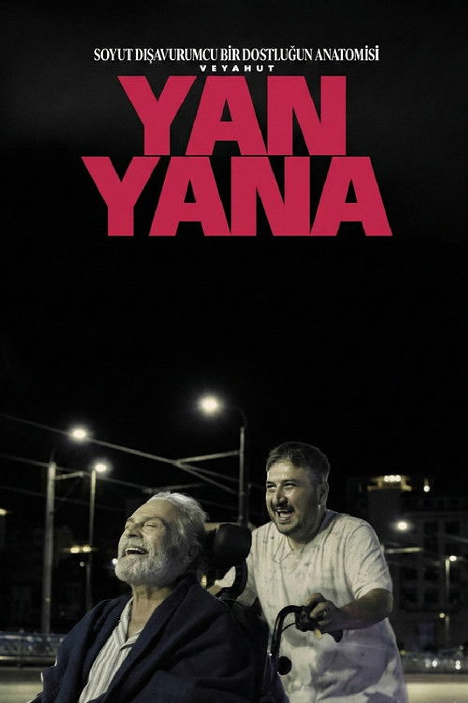
Kaza sonrası felç olan zengin bir adam, farklı geçmişten bir bakıcı tutar. Zıt karakterler başta çatışsa da, aralarındaki beklenmedik dostluk her ikisinin de yaşamını dönüştüren güçlü bir bağa dönüşür. dönüşür.
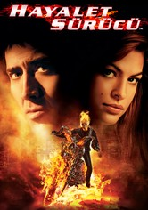
Johnny Blaze hayatını motorsikleti sayesinde kazanmaktadır. Motorsikletiyle yaptığı akıl almaz gösteriler sayesinde bu extrem spora meraklı binlerce insanın saygısını ve sevgisini kazanmaktadır. Ancak bu parıltılı hayatın altını kazıyınca ortada büyük bir trajedi olduğu görülecektir. Johnny Blaze, yıllar önce sevdiği kadını kurtarmak için şeytanla bir anlaşma yapmıştır. Bu anlaşmaya göre Johnny geceleri şeytanın emrinde çalışan bir 'hayalet' olmak zorundadır.
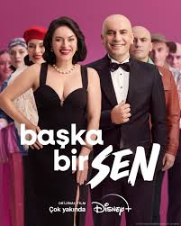
Mümtaz’ın hayatında hiçbir şey yolunda gitmemektedir. Yine böyle bir günde onun yolu Derya ile kesişir. Dahil oldukları büyük bir kaza, Derya ile Mümtaz’ın hayatını geri dönüşü olmayacak bir şekilde değiştirir. Mümtaz ile Derya aile olabilmenin zorlukları ve sonsuz aşkın sınırlarıyla mücadele etmek zorunda kalır.
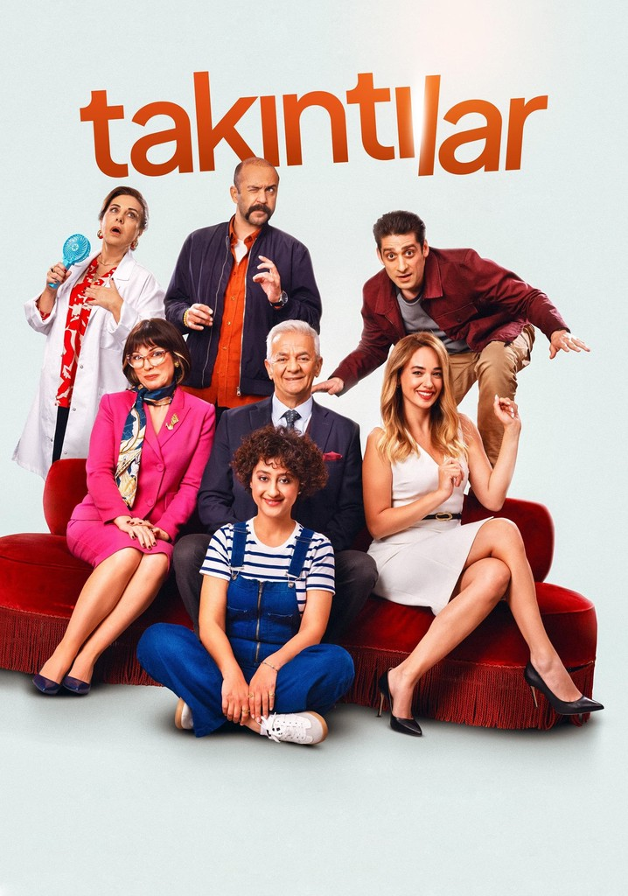
Takıntılar, Fransız yazar Laurent Baffie’nin “Toc Toc” adlı tiyatro oyunundan uyarlanıyor. Obsesif kompulsif bozukluğu olan altı kişi ünlü psikiyatr Orhan Kerim Baykal’dan randevu alır. Ancak altı hastanın randevularının çakışması işlerin karışmasına neden olur. Üstelik doktor da ortalarda yoktur ve bu hastaların kendilerini beklenmedik maceraların içerisinde bulmasına neden olur.
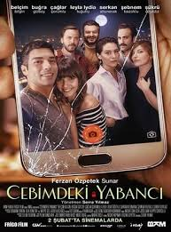
Yedi eski dost bir akşam yemeğinde bir araya gelmeye karar verir. Herkes sofranın başında oturmuş sohbet etmekte, şen kahkahalar eşliğinde yemek yemektedir. Yemek sırasında bir oyun oynamaya karar verilir. Oyun oldukça basittir; herkes telefonlarını masaya koyacak, gelen her mesaj ve bildirim yüksek sesle okunacaktır. Yedi dostun maskelerinin ardındaki hayatların cep telefonları ile ortaya koymaları ilişki dengelerini altüst eder. Bunca zaman çok yakın dost olduklarını düşünün grup aslında birbirlerine yabancıdır.
Diğer film önerileri zamanla eklenecektir.